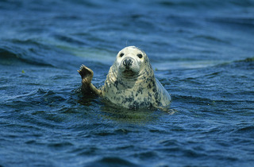

Hello! :)
About Me
My name is Panagioti Blanas but everyone just calls me Peter, and this website showcases an about me page (which you are currently reading), my professional resume, and an overly long rant about my favorite video game franchise.
Feel free to explore and learn more about me and don't worry—I get it if you don't want to read everything I wrote about the video game.
Here’s a cool seal picture
When I was younger I actually really wanted to be a marine biologist. Obviously, I went down a wildly different path later on, but I still have a huge appreciation for sea life because it's just so strange and goofy.
Me and my friends have played DND (almost) every Friday for the past three years.
Here is a picture of me and my favorite losers. (They are like brothers to me.)
How did I get into IT?
I had a professor in high school that I really admired. He was a computer repair teacher, but he was very knowledgeable in all things IT. It was through him that I discovered my enjoyment of IT and computer systems, and from then on, I haven't looked back (apart from that short period in my senior year where I wanted to be a literature teacher, but we don't talk about that).

What are my plans for the future?
Well, hopefully, I’ll get a nice job in IT, but who knows where the future might take us? All I know is that you might not always end up where you expected, but you will always end up where you needed to be. And yes, I mean that in the corniest way possible.

Ah man, I'm running out of things to talk about.
It's surprisingly difficult to write about yourself, isn't it? I never really think about how certain things came about in my life—I just already know. This About Me portion and figuring out what to put here has surprisingly been the most difficult part of the project.